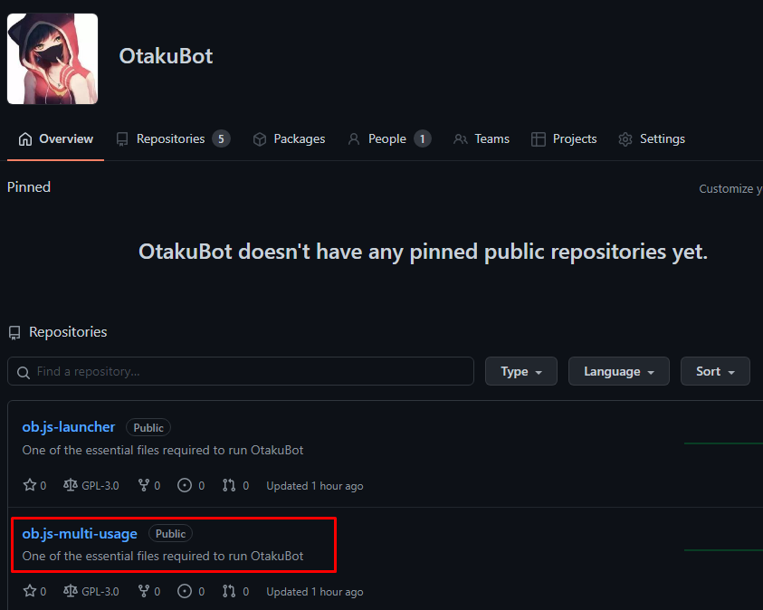
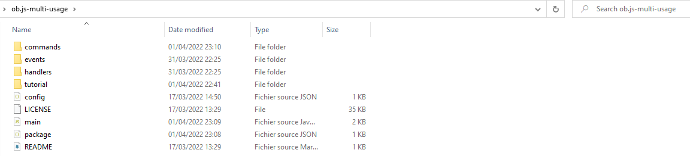
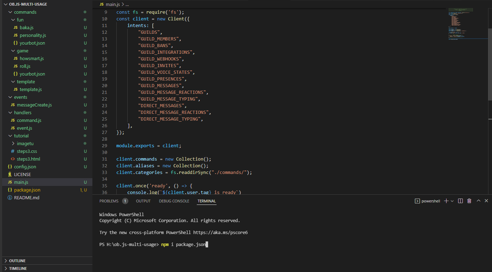
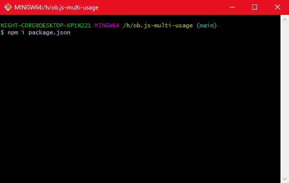
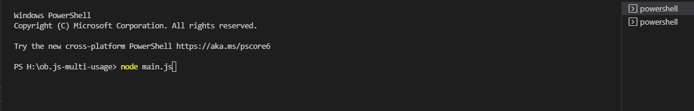
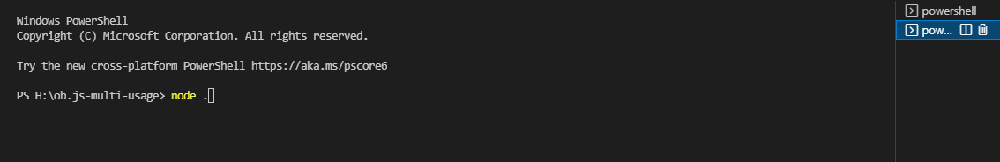

After downloading the folder from Github from
https://github.com/OtakuBot/ob.js-multi-usage"
Your folder will be like this
node_modules will be loaded in our next steps
Open your editor program
[RECOMMAND VisualStudio]
Download node modules using npm i package.json
Do you already have Git Program?
The bot is ready to work , Open Your IDE
Run Main File
You can also use
Here we have finished the tutorial on how to run the bot. For any inquiries, contact me via Discord